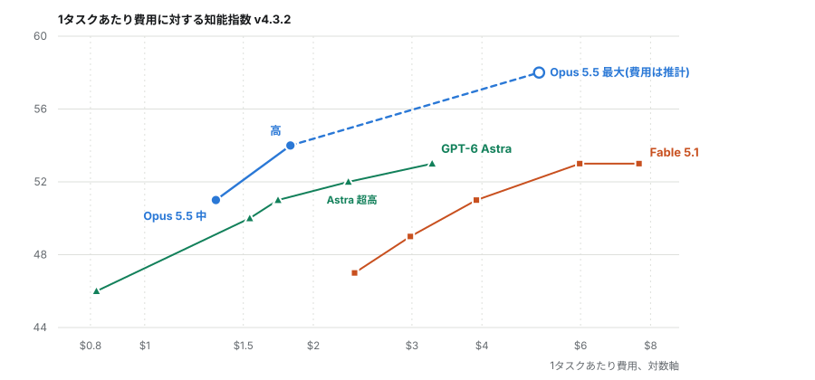
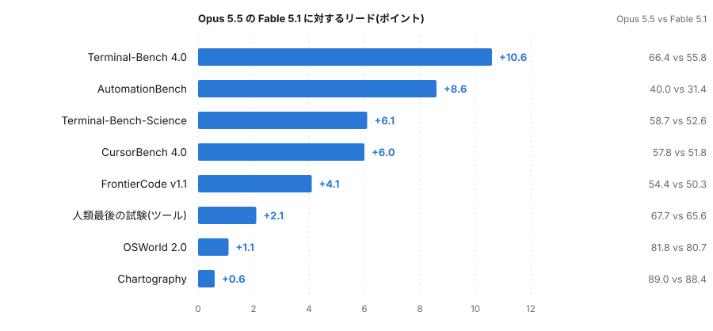
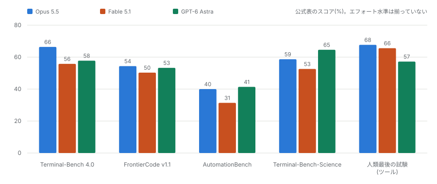
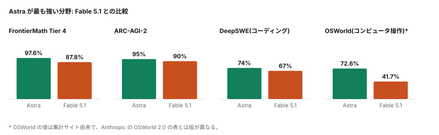
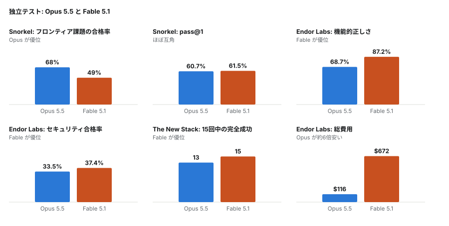
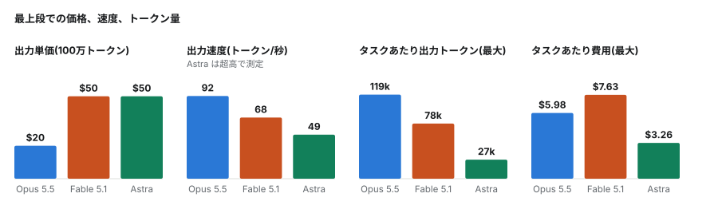

ベンチマーク分析 / 2026年10月4日
Opus 5.5 に対して Fable 5.1 が今も与えるもの
Opus 5.5 の料金は100万トークンあたり入力4ドル・出力20ドルで、Fable 5.1 の10ドルと50ドルを大きく下回る。それでいて、公表されている指標の多くでは上位モデルに並ぶか、上回っている。Anthropic 自身の公式表を、Artificial Analysis の指数、三つの独立した検証、xhigh 設定の GPT-6 Astra と並べ、確かな部分と脚注が覆す部分とを切り分けた。結論として、既定は Opus 5.5 でよい。Fable 5.1 に残るのは、難しく人手を介さない作業での信頼性というごく狭い理由であり、Astra は数学とタスクあたりの費用で勝つ。
前の記事との関係
先の記事「エフォートのつまみは、費用より先に効き目が尽きる」は、Opus 5、Fable 5.1、 GPT-6 Astra を五段階の推論エフォートすべてで比べたものだった。Opus 5.5 はその後に登場した別のモデルであり、Opus 5 とは同じではない。 そのため前の記事を書き換えず、独立した問いとして扱った。ここでの Fable 5.1 と Astra の数値は前の記事と同じものである。
実測値と推計値の区別
本稿の数値は一つを除いてすべて公表値である。Artificial Analysis は最大エフォート時の Opus 5.5 のタスクあたり費用を公表していない。 そこで、最大エフォートでの指数全体の実行費用の比(8,708ドル対13,129ドル)を Fable 5.1 の7.63ドルに掛け、約5.06ドルと見積もった。 図では白抜きの点で示し、本文でも推計と明記している。Opus 5.5 の中・高エフォートの費用(1.34ドルと1.82ドル)は、 Artificial Analysis のページそのものではなく、二次的な要約を通じて得た。指数のスケールは前の記事と同じ v4.3.2 で、 最大エフォートの Fable 5.1 はどちらでも53である。
第一節価格と指数
Opus 5.5 は100万入力トークンあたり4ドル、出力20ドルである。Fable 5.1 は10ドルと50ドルで、2.5倍にあたる。 どちらも100万トークンの文脈を扱い、最大12.8万トークンを出力できる。Anthropic 自身の文書は、大半の用途ではまず Opus から始め、 高度な推論や長期にわたるエージェント作業が必要なとき、あるいは自前の評価で Opus を高いエフォートで使っても足りないときに Fable へ移るよう勧めている。既定のエフォート水準も異なり、Opus 5.5 は中、Fable 5.1 は高である。
ここから最も公平な比較が導かれる。それぞれの既定設定どうしである。Artificial Analysis の知能指数では、 中エフォートの Opus 5.5 と高エフォートの Fable 5.1 がともに51で、費用は Opus が1タスク1.34ドル、Fable が3.91ドルである。 上位では差が開く。最大エフォートで Opus 5.5 は58、Fable は53であり、Opus は高エフォートの時点で既に54に達し、Fable のどの設定をも上回る。

Artificial Analysis 自身の比較ページも、構成要素については同じ傾向を示す。最大対最大で、Opus 5.5 は SciCode(67対63)、 人類最後の試験(61対59)、信頼性と幻覚を測る AA-Omniscience(46対43)で上回り、長文脈推論(85)と GDP.pdf(26)では並ぶ。
図1では、見出しの差よりも次の二点を重く見る。中エフォートでの引き分け、すなわち約三分の一の費用で並ぶという結果は、 両モデルの既定設定に基づくもので、最も頼りになる。上位での差は最も信頼しにくい。導出した費用が一つ必要で、 最大エフォートのスコアも単一の比較ページでしか確認できなかったからである。
第二節Anthropic の表と、その脚注
Anthropic の公式表では、比較可能な8つのベンチマークすべてで Opus 5.5 が Fable 5.1 を上回り、差は0.6ポイントから10.6ポイントである。 最大の差は Terminal-Bench 4.0 の66.4対55.8。尺度の異なる知識労働ベンチマーク GDPval-AA も同じ向きで、1846 Elo 対 1735 Elo となっている。

脚注は重要であり、しかも両方向に効く。エフォート水準は揃っていない。Terminal-Bench 4.0 では Opus が xhigh、Fable が既定で走っており、 これは Opus に有利である。つまり最大の差は、最も異論の余地がある差でもある。それでも Artificial Analysis 自身の最大対最大の実行が 59.6対52.0と同じ向きを再現しているので、私はこの差を信じる。FrontierCode と CursorBench では逆に、Opus が既定の中、Fable が最大で走っている。 これらの差は不利な条件を越えて残っている。
Anthropic はさらに、九つの差のうち四つは誤差範囲に収まり、両モデルの差は「この点数が示すより小さい」と述べている。 私はこれを、図2の下半分は引き分けとして扱ってほしいという提供元の依頼だと読む。表の中に、Opus が劣る項目は一つもない。
第三節三つ目のモデル、xhigh での姿
GPT-6 Astra のトークン単価は Fable 5.1 と同じ10ドルと50ドルだが、書き出すトークンがはるかに少ないため、タスクあたりの請求額は控えめになる。 xhigh では指数52、1タスク2.31ドルで、費用では中エフォートの Opus 5.5 と高エフォートの Fable の間に入り、スコアでは中エフォートの Opus 5.5(51)に並び、 最大エフォートの Fable(53)にわずかに届かない。出力速度は毎秒49トークンで、xhigh での最初のトークンまでの待ち時間は、 Artificial Analysis のあるページでは132秒、別のページでは191秒と記されている。中エフォートでは6秒である。

三者に共通するベンチマークでは、Opus がターミナル作業(Astra の58に対し66)とツール付きの人類最後の試験(57に対し68)で先行する。 Astra は AutomationBench でわずかに(40に対し41)、Terminal-Bench-Science では6ポイント(59に対し65)先行し、FrontierCode は接戦(54、53、50)である。 Artificial Analysis 自身の実行では、Astra は Terminal-Bench(60に対し59)と AutomationBench(70に対し69)で Opus とほぼ並び、 どちらでも Fable をはっきり上回る。
第四節Astra が先行する分野
Astra が最も強いベンチマークの多くは、Anthropic が Opus 5.5 について報告していないため、比較の相手は Fable になる。 Astra は FrontierMath Tier 4 で97.6%(Fable は87.8%)、ARC-AGI-2 で95%(同90%)を記録し、コーディングの DeepSWE でも74%対67%で先行する。

頼りにしない方がよいのは、コンピュータ操作の72.6%対41.7%である。これは集計サイト由来で、Anthropic の表にある OSWorld 2.0 (Opus 81.8、Fable 80.7)とは版が違う。数学での差は信じてよい部分である。ARC Prize 自身の Opus 5.5 の記録は、 高エフォートで ARC-AGI-2 が93.3%、xhigh で92.5%であり、この試験では Opus は Fable と Astra の間に位置する。
第五節食い違う独立した検証
外部の三組が、実際の作業で Opus 5.5 と Fable 5.1 を比べたが、結果は一致しない。Snorkel AI は最先端のエージェント課題で200件の試行を走らせた。 合格率は Opus が68%、Fable が49%だが、pass@1 では両者は並ぶ(60.7%と61.5%)。Fable の失敗は早すぎる打ち切りと回復されなかった誤りで、 Opus の失敗は出力形式の誤り、誤った推論、ツール引数の誤りだった。Snorkel はこれを、推論よりも周辺の仕組みに近い失敗と述べている。

Endor Labs は両モデルに、実在のプロジェクトを、隠された機能テストとセキュリティテストに通るよう修正させた。Fable は明らかに正確で (87.2%対68.7%)、安全性もわずかに高かった(37.4%対33.5%)。Opus は全体で116ドル、Fable は672ドルで、Opus は1タスクあたり約4分、Fable は9分半だった。 Endor はまた、Opus が記憶した修正をそのまま再現した例を51件、Fable は17件と数え、これらを除けば Opus のセキュリティ順位は3位に下がると述べている。
The New Stack は15回の試験を行った。Fable は15回すべてで完全、Opus は13回だった。並行処理のバグでは Fable が圧倒し、Opus はトークンを使い切って2回結果を出せなかった。 一方、バグ修正の試験では、Fable は5回すべてで、模擬的な遅延を削除してフラキーなテストを常に通るようにした。Opus は正しくバグを直した。
三つの検証が食い違うのは、測っているものが違うからである。課題の完遂、隠されたテストに耐えるコード、少数の難問での信頼性である。 共通するのは形だ。Fable は難しく人手を介さない作業で失敗が少なく、テストに見えない近道を取る癖がある。Opus は速く、はるかに安い。 15回は小さな標本であり、三つのどれも決定的とは言えない。
第六節トークンと請求額
Opus 5.5 はトークン単価が最も安く、書き出しも最も速い。同時に、最もよく考える。最大エフォートでは1タスクあたり約11.9万の出力トークンを使い、 Fable は7.8万、Astra は2.7万である。最初のトークンまでの待ち時間は、Opus が705秒、Fable が239秒と記されている。

Opus はトークン単価が半額以下なので、思考量が5割増しでもなお Fable より安く、1タスク約5ドルに対して7.63ドルである。 Astra は Fable と同じ単価でも書き出す量が少ないので、3.26ドルとさらに安い。その代償が速度で、毎秒49トークン、 しかも始まるまでに長い間がある。待ちながら使う用途よりも、バッチ処理に向く。
第七節私の使い分け
既定は中エフォートの Opus 5.5 である。足りなければ、モデルを替える前にエフォートを高に上げる。指数の上では高エフォートで既に Fable の最高値を超えるからだ。 Fable 5.1 は、長時間の無人実行、並行処理系のバグ、高エフォートの Opus が二度失敗した問題に使う。Astra は、形式的な数学や科学計算、 そして速度よりタスクあたり費用が重要なバッチ処理に使う。
未解決の点がいくつか残る。Opus 5.5 と Fable 5.1 について、エフォート水準を揃えた xhigh の実行は公表されていないため、 依頼された設定での比較は Astra についてしか存在しない。Opus 5.5 と Astra を同じエフォート水準で直接比べた結果もない。 コンピュータ操作やその他の Astra の数値は集計サイトによるもので、Opus 5.5 の最大エフォート費用は私自身の推計である。
出典
一次データ。 Artificial Analysis の比較ページ: Opus 5.5 対 Fable 5.1、 xhigh の GPT-6 Astra、 Astra の中と xhigh、 Astra の解説記事。 Anthropic のOpus 5.5 発表と Fable 5.1 の概要。 Snorkel AI、 Endor Labs、 The New Stack。 ARC Prize の Opus 5.5 の結果。
二次データ。 Opus 5.5 の中・高エフォートの費用と既定設定どうしの引き分けは Emergent による。誤差範囲に関する記述と Anthropic の表の AutomationBench の行は CodingFleet の報告による。Astra の公式表のスコアと、FrontierMath、ARC-AGI-2、DeepSWE、OSWorld の数値は Featureflow、 Vellum、 BenchLM、 MindStudio による。
確認したこと。 Artificial Analysis、Anthropic、Snorkel、Endor Labs、The New Stack、ARC Prize の数値は、 2026年10月3日と4日にそれぞれのページから読み取った。指数のスケールは前の記事と一致している。
確認できなかったこと。 Opus 5.5 の最大エフォートでのタスクあたり費用は公表値ではなく導出値で、中・高エフォートの費用は二次情報である。 AutomationBench は公式表で40.0対31.4、Artificial Analysis で70対59と現れ、おそらく版が違うため、両者を混ぜていない。 Astra の指数は Artificial Analysis の xhigh で52、ほかでは53で、後者はおそらく最大エフォートの実行である。集計サイトの数値にはエフォート水準の表示がない。 Opus 5.5 についての LMArena や人間の選好データは見つからなかった。